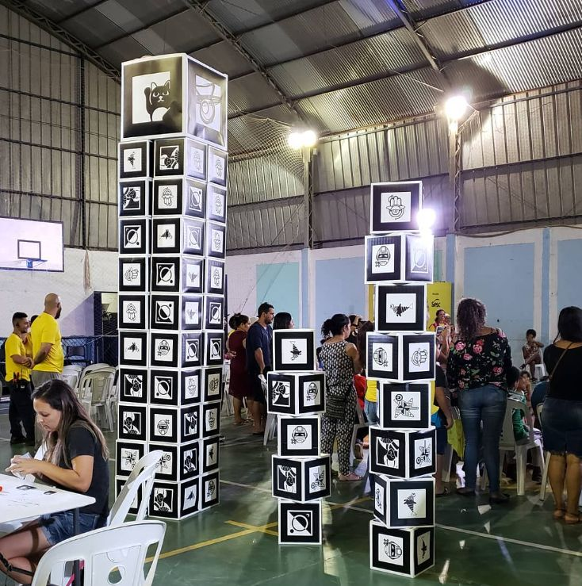

Talks
Twenty-four years of stages, VJ booths and workshops.
From free software and VJing to internationally awarded augmented reality.

Highlights
My work was also shown in France and Peru.
What I talk about
The 150+ talks and workshops fall into five themes. The events abroad are in the highlights above.
Full list
The 224 activities I could confirm with a source, from 2000 to 2026. Open a year, or filter by kind of activity. Titles are in the language they were given in.
2026 9
- Oct 17Course "Conteúdo Autêntico com IA"
diar.ia.br AI Immersion, cohort 2, online - Oct 10Course "Crie seu primeiro agente de IA sem programar"
diar.ia.br AI Immersion, cohort 1, online - Jul 1Talk "X-Reality: Jandig e Mitologia Estendida"
X-Reality USP 2026, Academic Conference, São Paulo, SP - Jun 30Panel opening panel
X-Reality USP 2026 (CTR-ECA), São Paulo, SP - Jun 20Workshop "Mitos em Movimento: Animação e Realidade Aumentada"
2ª Semana de Artes de Cataguases (AnimaParque), Cataguases, MG - Jun 19Exhibition "Mitos em Movimento: Animação e Realidade Aumentada"
2ª Semana de Artes de Cataguases, Cataguases, MG - May 13Panel "XR Futures: Games, Art, and the Expansion of Immersive Worlds"
São Paulo Innovation Week 2026 (FAAP, Palco 27), São Paulo, SP - Jan 30Workshop "Oficina: Criação de Publicações Interativas em Realidade Estendida"
Mitologia Estendida (Coletivo Digital), São Paulo, SP - Jan 29Installation mixed reality installation and AR sticker album
Mitologia Estendida (Coletivo Digital), São Paulo, SP
2025 2
- Nov 7Installation "Jandig - Brazilian Myths in Mixed Reality"
Mozilla Festival 2025 (Poble Espanyol), Barcelona, Spain - Oct 24Presentation playtest, demo and talk about the project
Mitologia Estendida na USP (CTR-ECA), São Paulo, SP
2024 3
- Sep 20Panel opening panel
X-Reality USP 2024, São Paulo, SP - Aug 26Exhibition "Narrativa Territorial de Ouro Preto"
ExperimentAnima 2024 / V Mostra de Animação, UTFPR, Curitiba, PR - Aug 26Exhibition "Narrativa Territorial - Centro de Belo Horizonte 2021"
ExperimentAnima 2024 / V Mostra de Animação, UTFPR, Curitiba, PR
2023 2
- SepInterview podcast episode
SoundBITES podcast (Nanochomp), online - Aug 25Workshop videocast production
LABmais, Sesc Jundiaí, Jundiaí, SP
2022 1
- Nov 17Panel opening panel
X-Reality USP 2022, São Paulo, SP
2021 3
- Mar 19Panel opening panel
X-Reality USP 2021, online - MarCuration showcase of 360° music videos
Festival Marte 2021, online - MarExhibition "Connected - Global AR Exhibition"
MozFest 2021, online
2020 7
- Dec 7Discussion webinar "Arte, Cultura e Tecnologia"
Ciclo de Gestão Cultural 2020 (Oficinas Culturais SP), online - Nov 28Workshop "Da Realidade Aumentada à Projeção Mapeada"
Festival Amazônia Mapping 2020, online - Nov 18Talk seminar on the VUCA world and my career
PUC Minas, Belo Horizonte, MG or online - NovJury selection committee
ProAC Expresso LAB 57/2020 (games, VR and AR), online - Sep 19Panel "Audiovisual Expandido"
Festival Criativar, online - Sep 18Exhibition digital tour of the exhibition
Exhibition "Caipirismo - José Antônio da Silva e Jocelino Soares" (Sesc Bom Retiro), São Paulo, SP and online - FebExhibition Jandig augmented reality in the parade
Carnaval 4.0, Rosas de Ouro (Sambódromo do Anhembi), São Paulo, SP
2019 10
- Aug 27Course "Formação em Realidade Aumentada"
Garota Hacker (Jandig and Lá da Favelinha), Belo Horizonte, MG - AugCourse augmented reality course "Rejunte"
Garota Hacker (studio and FUMEC), Belo Horizonte, MG - Jul 25Exhibition "Narrativa Territorial - Ouro Preto"
Festival Marte 2019, Ouro Preto, MG - Jul 25Installation "Instalação artística tecnológica - Virtual - Jandig por Vj Pixel"
MARTE Festival 2019, 2ª edição (Praça Tiradentes), Ouro Preto, MG - Jun 29Panel opening panel
X-Reality USP 2019 (EBAC e ECA-USP), São Paulo, SP - Jun 2Panel "A hora da XR (Extended Reality)"
Festival Path 2019 (Maksoud Plaza), São Paulo, SP - JunExhibition "Vida Longa à Jandig!"
Opening of Sesc Guarulhos, Guarulhos, SP - Apr 16Course "Produção de Vídeo Imersivo (360)"
Sesc Pompéia, São Paulo, SP - Mar 29Workshop "Oficina de Jandig - arte em realidade aumentada"
Circuito Sesc de Artes 2019, Nine stops in São Paulo state - Mar 29Exhibition "Jandig - Arte em Realidade Aumentada"
Circuito Sesc de Artes 2019, Nine stops in São Paulo state
2018 12
- Oct 27Session "Jandig - augmented reality exhibition"
MozFest 2018, Decentralisation Space (Ravensbourne), London, UK - Oct 27Pitch "Jandig"
MozFest 2018, MOSS Awards Speed Dating, London, UK - Oct 10Talk Rede InfoAmazonia
GOSH 2018, Gathering for Open Science Hardware, Shenzhen, China - Oct 9Installation "Na Pressão!"
Experimenta! Comida, Saúde e Cultura (Sesc Avenida Paulista), São Paulo, SP - Oct 4Collaboration support for the VR showcase
26th Raindance Film Festival, Raindance Immersive Stories (Gallery of Immersive Stories), London, UK - OctInstallation "Janelas para o Passado"
Sesc Pompéia, São Paulo, SP - OctVJ set my last VJ performance
GOSH 2018, Gathering for Open Science Hardware, Shenzhen, China - Sep 5Course "Produção de Vídeo Imersivo"
Sesc Pompéia, São Paulo, SP - May 19Installation "VideoPong"
Virada Cultural 2018 (Chácara do Jockey), São Paulo, SP - May 19Installation "Pac-Man Motion"
Virada Cultural 2018 (Chácara do Jockey), São Paulo, SP - Apr 29Workshop "Mapeamento Aéreo Participativo"
Sesc Interlagos, São Paulo, SP - Mar 4Workshop "Arte em QR Code"
FestA! Festival de Aprender (Sesc Osasco), Osasco, SP
2017 6
- Dec 16Workshop "Brincando de VJing"
Sesc Osasco, Osasco, SP - Oct 2Performance "Goodnight, Sleep Tight"
ZU-UK (GAS Station), London, UK - OctPerformance "Goodnight, Sleep Tight"
ZU-UK (TAG, Concordia), Montreal, Canada - May 20Exhibition Jandig exhibition, Japan theme
Virada Cultural 2017 (Sesc Belenzinho), São Paulo, SP - MayInstallation "Pac-Man Gigante"
Virada Cultural 2017 (Sesc Belenzinho), São Paulo, SP - Apr 20Exhibition "Janelas Digitais"
Coletivo Digital, São Paulo, SP
2016 3
- OctPerformance "Goodnight, Sleep Tight"
Barcu / AltCity (ZU-UK), Bogotá, Colombia - Aug 24Presentation platform of the Observatory of Protected Areas and Climate
Taller Observatorio Regional de Áreas Protegidas del Bioma Amazónico (Proyecto SNACC, Redparques, WWF), Lima, Peru - May 25Residency lab "Dinner Date", with ZU-UK and TAG Montréal
GAS Station (ZU-UK), London, UK
2015 10
- Dec 10Presentation final presentation of the residency
Red Bull Basement (Red Bull Station), São Paulo, SP - Nov 20Presentation opening of the theme "Building networks across regions"
Public Lab, 5th Annual Barnraising, Cocodrie, Louisiana, USA - Oct 27Presentation public presentation by the residents
Red Bull Basement, Open Day (Red Bull Station), São Paulo, SP - SepResidency pilot of an environmental monitoring network, "Código Urbano"
Red Bull Basement, 1ª turma (Red Bull Station), São Paulo, SP - Jul 25Residency "Criaturas Afetivas – Experiência #1"
DRIFT Internacional (ZU-UK), Miguel Pereira, RJ - May 29Presentation Rede InfoAmazonia, one year on
First anniversary of the Google Impact Challenge Brazil (Google office), São Paulo, SP - May 14VJ set VJ sets and coordination of the video showcases
Pragatecno, "Música eletrônica: de onde viemos para onde vamos?" (Espaço Lalá, Rio Vermelho), Salvador, BA - Apr 14Workshop "Chronica Mobilis"
Oi Kabum, Salvador, BA - Apr 13Talk "Chronica Mobilis na Oi Kabum"
Oi Kabum, Salvador, BA - Jan 22VJ set
Festival de Verão Salvador 2015 (palco Sensações), Salvador, BA
2014 13
- OctResidency "Chronica Mobilis"
Hangar, Barcelona, Spain - Aug 19Workshop projection mapping, with a closing showcase
Oficinas de Video Mapping (OVM) Bahia (Frida Projetos Culturais, Secult BA), Salvador, BA - AugWorkshop projection mapping
Oficinas de Video Mapping (OVM) Bahia, Ilhéus (Secretaria de Cultura de Ilhéus), Ilhéus, BA - May 7Talk "Criação e remix online de mapas usando Mapas Coletivos"
FISL 15, Porto Alegre, RS - MayTalk "Raul Hacker Clube – o início de um hackerspace"
FISL 15, Porto Alegre, RS - Apr 28Workshop "DustDuino"
Environmental Journalists Network Meeting (Google), San Francisco and Berkeley, USA - FebExhibition "Beberibe", group installation
b_arco (Galeria Virgílio), São Paulo, SP - Jan 30Workshop "Usando Jeo para criar sua plataforma de mapas"
Campus Party Brasil 2014, São Paulo, SP - Jan 9VJ set
Zona Mundi (Caatinga Cultura e Entretenimento), Salvador, BA - JanModeration "Jornalista precisa saber código?"
Campus Party Brasil 2014, São Paulo, SP - JanModeration "O futuro dos portais brasileiros"
Campus Party Brasil 2014, São Paulo, SP - JanModeration "Novos equipamentos: drones, sensores, wearables como google glass, celulares"
Campus Party Brasil 2014, São Paulo, SP - JanTalk "Hubs Criativos - 1º Encontro das Casas de Cultura Digital do Brasil"
Campus Party Brasil 2014, São Paulo, SP
2013 20
- DecWorkshop "Usando Jeo para criar sua plataforma de mapas"
Oficina para a Inclusão Digital 2013, Brasília, DF - Oct 21Workshop "Arte+Tecnologia"
Desafios Contemporâneos, Funarte (Teatro Vila Velha), Salvador, BA - SepExhibition "Mimesis"
Vivacidade, São Paulo, SP - Aug 30Workshop "Using Jeo to create your own mapping platform"
Hacks/Hackers Buenos Aires Media Party 2013, Buenos Aires, Argentina - Aug 29Keynote "The EcoLab, bringing innovation to environmental reporting"
Hacks/Hackers Buenos Aires Media Party 2013, Buenos Aires, Argentina - Aug 29Presentation InfoAmazonia and Jeo stand at the Media Feria
Hacks/Hackers Buenos Aires Media Party 2013, Media Feria, Buenos Aires, Argentina - JulTalk "Incubadora – Interação no teatro mediada por Software Livre"
FISL 14, Porto Alegre, RS - JulWorkshop "Video mapping"
FISL 14, Porto Alegre, RS - JulInstallation "Memórias", projection mapping
FISL 14, Porto Alegre, RS - JunInstallation "Surfluz"
Circuito Sesc de Artes 2013, Nine cities in São Paulo state - May 24Talk "Redescobrindo Games"
TEDx Salvador (ACBEU), Salvador, BA - May 24Installation "VideoPong"
TEDx Salvador (ACBEU), Salvador, BA - May 13Workshop "Projection Mapping"
Oficinas de Video Mapping, Rede Nacional Funarte Artes Visuais 9ª ed. (Fotoativa), Belém, PA - MayWorkshop "Projection Mapping"
Oficinas de Video Mapping, Rede Nacional Funarte Artes Visuais 9ª ed. (Travessa da Imagem), Fortaleza, CE - MayInstallation "VideoPong"
Virada Cultural 2013, São Paulo, SP - MayInstallation "Pac-Man Motion"
Virada Cultural 2013, São Paulo, SP - MarWorkshop "Projection Mapping"
Oficinas de Video Mapping, Rede Nacional Funarte Artes Visuais 9ª ed. (Ideia Ambiental e Cultural), Goiânia, GO - FebDiscussion "Arte, tecnociência e educação: Propostas de modelos de Medialabs / Hacklabs"
Campus Party Brasil 2013, São Paulo, SP - FebModeration "Bate-Papo Empreendedores Criativos: Professor Pardal"
Campus Party Brasil 2013, São Paulo, SP - FebWorkshop "Projection Mapping"
Oficinas de Video Mapping, Rede Nacional Funarte Artes Visuais 9ª ed. (Barraco Estúdio), Porto Alegre, RS
2012 37
- Nov 7Residency lab of technology experiments
Sesc Santana, Hard users: software e sensibilidade, São Paulo, SP - NovInstallation "VideoPong"
Vídeo Guerrilha, São Paulo, SP - NovExhibition "Criaturas Afetivas – Experiência #1"
Sesc Santana, São Paulo, SP - Oct 13VJ set
Festa do Vinil (Sesc Ipiranga), São Paulo, SP - Sep 26Workshop "Mapeamento em realidade aumentada"
Ciclo Realidade Aumentada, Sesc Sorocaba, Sorocaba, SP - Sep 12Workshop "Introdução à realidade aumentada"
Ciclo Realidade Aumentada, Sesc Sorocaba, Sorocaba, SP - Sep 10Talk "Realidade Aumentada"
Ciclo Realidade Aumentada, Casa da Cultura Digital, São Paulo, SP - Sep 10Workshop "Introdução à Realidade Aumentada"
Ciclo Realidade Aumentada, Casa da Cultura Digital, São Paulo, SP - Sep 1Installation "VideoPong"
Opening of Sesc Sorocaba, Sorocaba, SP - Sep 1Exhibition "Algo a Mais? - Jandig"
Opening of Sesc Sorocaba, Sorocaba, SP - SepTalk "Realidade Aumentada"
Ciclo Realidade Aumentada, Sesc Sorocaba, Sorocaba, SP - SepWorkshop "Usando um Kinect para fazer seu próprio game"
Ciclo Realidade Aumentada, Sesc Sorocaba, Sorocaba, SP - SepResidency lab on interaction between people and plants
Sesc Sorocaba, Experimentações Eletro-Orgânicas, Sorocaba, SP - SepExhibition "Experimentações Eletro-Orgânicas"
Opening of Sesc Sorocaba, Sorocaba, SP - Aug 30Discussion "Arte digital: o centro está em toda parte"
Estéticas das Periferias (Sesc), São Paulo, SP - Jul 26Discussion "Cidades Copyleft"
FISL 13 (2012), Porto Alegre, RS - JulTalk "Jandig – arte em realidade aumentada"
FISL 13 (2012), Porto Alegre, RS - JulExhibition "Jandig"
FISL 13 (2012), Porto Alegre, RS - Jun 1Discussion "Narrativas na Cidade: realidade aumentada compartilhada"
Circuito Vivo arte.mov (Paço das Artes, USP), São Paulo, SP - JunTechnology direction video capture and projection mapping
Teatro Vila Velha, play "O Olho de Deus é o Avesso dos Retalhos", Salvador, BA - May 31Exhibition "Narrative Navigation"
Circuito Vivo Arte.mov (Paço das Artes), São Paulo, SP - Apr 27Workshop
Insper, São Paulo, SP - Apr 21Talk "Narrative Navigation"
Dorkbot, Salvador, BA - Apr 20Workshop collaborative writing session for Narrative Navigation
Centro Cultural São Paulo, São Paulo, SP - AprTalk "Narrative Navigation"
Labmovel (Praça Dom José Gaspar), São Paulo, SP - AprExhibition "Narrative Navigation"
Labmovel (Praça Dom José Gaspar), São Paulo, SP - AprExhibition "Jandig"
Labmovel (Praça Dom José Gaspar), São Paulo, SP - AprTalk "Narrative Navigation"
Labmovel (Centro Cultural São Paulo), São Paulo, SP - AprExhibition "Narrative Navigation"
Labmovel (Centro Cultural São Paulo), São Paulo, SP - MarTalk "Narrative navigation"
NIMk, Nederlands Instituut voor Mediakunst, Amsterdam, Netherlands - MarExhibition "Jandig"
Baixo Centro, São Paulo, SP - Feb 9Talk "Jandig"
Campus Party Brasil 5, São Paulo, SP - Feb 9Talk "Vjing em Software Livre"
Campus Party Brasil 5, São Paulo, SP - FebExhibition "Jandig"
Campus Party Brasil 5 (Campus Futuro), São Paulo, SP - JanWorkshop "Seja um VJ livre!"
Conexões Globais 2.0, Porto Alegre, RS - JanInstallation "Surfluz"
Digitalia, Salvador, BA - JanResidency "Narrative Navigation"
NIMk / Vivo arte.mov, Residência BR/NL (Labmovel), Amsterdam, Netherlands and São Paulo, SP
2011 16
- DecExhibition "Jandig"
Ônibus Hacker, São Paulo, SP and Rio de Janeiro, RJ - DecExhibition "Jandig"
Festival CulturaDigital.Br (MAM Rio), Rio de Janeiro, RJ - Nov 7Workshop "Realidade aumentada na educação"
Plug Minas, NAP (Núcleo de Apoio ao Professor), Belo Horizonte, MG - NovInstallation "VideoPong"
Samba na Casa do Gato, São Paulo, SP - OctResidency project "memeLab"
CEMEC, Empreendedores Criativos, São Paulo, SP - SepWorkshop "Streaming de vídeo"
Teatro Vila Velha, Salvador, BA - Aug 17Talk "Do Broadcast ao Broadband"
Faculdade Cásper Líbero, V Semana do Audiovisual, São Paulo, SP - AugPanel "Pesquisa Vídeo Livre no Brasil: Produtores e Desafios"
II Seminário de Literacia Midiática, São Paulo, SP - AugGuest lecture "Interfaces Interativas"
PUC-SP, Curso de Design Informacional, São Paulo, SP - JulCuration coordination of the Mostra do Vídeo Livre
FISL 12, Mostra do Vídeo Livre 2011, Porto Alegre, RS - MayWorkshop "Video Mapping"
Nave, Recife, PE - AprInstallation "Photolink", a mosaic of 24 projectors
7ª Virada Cultural (Sesc Belenzinho), São Paulo, SP - Mar 22Workshop "Vídeo Livre"
UFRB, I Semana da Pesquisa de Cinema e Audiovisual, Cachoeira, BA - Mar 12Workshop "Oficina de Streaming"
Oficina de Streaming CCE, São Paulo, SP - FebDiscussion "Plataformas de Vídeo Livre"
Turing Clube, Garoa Hacker Clube, São Paulo, SP - Jan 22Talk "VJing"
Campus Party Brasil 2011, São Paulo, SP
2010 19
- Nov 16Talk "Pesquisa Vídeo Livre no Brasil"
II Fórum da Cultura Digital Brasileira (Cinemateca Brasileira), São Paulo, SP - Nov 8Jury selection for the VJ tournament
Festival Conexões Tecnológicas (Instituto Sergio Motta), São Paulo, SP - Oct 2Talk "Open Video in Brazil"
Open Video Conference 2010, New York, USA - Sep 15Talk "HTML5 e a evolução multimídia"
O Empreendedor Audiovisual no Mercado Globalizado, Mídias Digitais (Cine Glória), Rio de Janeiro, RJ - Aug 26Talk "Software Livre"
Broadcast & Cable (Senac stand), São Paulo, SP - Jul 27Talk "Produção multimídia"
VI SEMCINE (ICBA), Salvador, BA - Jul 22Talk "Apresentando a Vimax – Plataforma Livre para Vídeos"
FISL 11, Porto Alegre, RS - JulDiscussion "Plataformas Digitais"
Seminário Interfaces Digitais Colaborativas, ECO-UFRJ, Rio de Janeiro, RJ - JulTalk "Cervo + Plataforma de Vídeo"
FISL 11, Porto Alegre, RS - JulDiscussion "Fundação da Aliança do Vídeo Livre"
FISL 11, Porto Alegre, RS - JunTalk "Vídeo Livre"
9ª Oficina para Inclusão Digital (OID), Brasília, DF - May 31Workshop streaming and IPTV
Rede iVoz, IPTV workshops - Apr 6Talk "Produção multimídia"
O Empreendedor Audiovisual no Mercado Globalizado (SIAESP), módulo Mídias Digitais, São Paulo, SP - AprCuration coordination of the Mostra do Vídeo Livre
FISL, Mostra do Vídeo Livre 2010, Porto Alegre, RS - MarTalk "Vídeo livre"
Campamento Latinoamericano de Jóvenes Activistas Sociales (JAS10, Open Society Institute e Fundación SES), Montevideo, Uruguay - FebDiscussion "Infoativismo"
Brazilian launch of the film "10 Tactics to Turn Information Into Action", São Paulo, SP - Jan 30Workshop "VJing"
Campus Party Brasil 2010, São Paulo, SP - JanDiscussion "Open Video"
Campus Party Brasil 2010, São Paulo, SP - JanCuration video curation
Simpósio Internacional de Políticas Públicas para Acervos Digitais (MinC)
2009 12
- DecGuest lecture "Interfaces Interativas"
PUC-SP, Curso de Design Informacional, São Paulo, SP - NovDiscussion "Roda de conversa sobre vídeo livre"
Fórum da Cultura Digital Brasileira 2009, São Paulo, SP - OctWorkshop "Remix de vídeo ao vivo"
Cibercultura 10+10, Santos, SP - AugWorkshop "Interfaces e interatividade"
CONSEGI 2009, Brasília, DF - AugWorkshop "Edição de vídeos com LiVES"
CONSEGI 2009, Brasília, DF - AugInstallation "VideoPong"
CONSEGI 2009, Brasília, DF - JunDiscussion "Open Video Alliance"
FISL 10, Porto Alegre, RS - JunDiscussion discussions, representing Brazil and the LiVES project
Open Video Conference 2009, New York, USA - Apr 29Discussion "Cultura livre e novas formas de proteção autoral"
Coletivo Digital, São Paulo, SP - FebWorkshop "Video editing"
Info-Activism Camp (Tactical Tech), Bangalore, India - FebWorkshop "Compressing and encoding"
Info-Activism Camp (Tactical Tech), Bangalore, India - JanWorkshop "Laboratório de novas interfaces"
Campus Party Brasil 2009, São Paulo, SP
2008 2
- AugWorkshop "Streaming de vídeo com software livre"
CONSEGI 2008, Brasília, DF - AprWorkshop "Panorama do vídeo em Software Livre"
FISL 9, Porto Alegre, RS
2007 9
- NovWorkshop "MetaReciclagem"
Teia 2007, Belo Horizonte, MG - NovTalk "MetaReciclagem"
Latinoware 2007 (IV Conferência Latinoamericana de Software Livre), Foz do Iguaçu, PR - NovWorkshop "MetaReciclagem"
6ª Oficina para Inclusão Digital, Salvador, BA - OctWorkshop "Produção de conteúdo para TV digital"
Semana Ginga Brasil, Brasília, DF - SepDiscussion "Software livre e música independente"
Festival Calango de Artes Integradas, Cuiabá, MT - JunTalk "Produção multimídia em softwares livres"
ECCO, Encontro de Cultura Colaborativa, Salvador, BA - AprDiscussion "Edição de vídeo em software livre, em que pé estamos? Pra onde vamos?"
FISL 8, Porto Alegre, RS - JanDiscussion "Inclusão digital e tecnologia na educação"
5ª Bienal de Arte, Ciência e Cultura da UNE, Rio de Janeiro, RJ - JanVJ set
FISL 8, TV Criei, Tive Como!, Porto Alegre, RS
2006 13
- NovTalk "Enlightenment DR17"
Latinoware 2006 (III Conferência Latinoamericana de Software Livre), Foz do Iguaçu, PR - NovTalk "Projeto Casa Brasil"
Latinoware 2006 (III Conferência Latinoamericana de Software Livre), Foz do Iguaçu, PR - NovTalk "LiVES"
Latinoware 2006 (III Conferência Latinoamericana de Software Livre), Foz do Iguaçu, PR - OctTalk "MetaReciclagem"
3º Encontro Mineiro de Software Livre, Ouro Preto, MG - OctTalk "Projeto Casa Brasil"
3º Encontro Mineiro de Software Livre, Ouro Preto, MG - OctTalk "Estúdio Livre"
3º Encontro Mineiro de Software Livre, Ouro Preto, MG - OctTalk "LiVES"
3º Encontro Mineiro de Software Livre, Ouro Preto, MG - OctWorkshop "MetaReciclagem"
3º Fórum Goiano de Software Livre, Goiânia, GO - AugTalk "Projeto Casa Brasil"
III Festival Software Livre da Bahia, Salvador, BA - JulDiscussion "Inclusão digital"
Câmara Municipal de Salvador, Salvador, BA - JulWorkshop "MetaReciclagem"
Festa Social de Fazenda Coutos, Salvador, BA - FebTalk "Estúdio Livre"
Carnaval Revolução, Belo Horizonte, MG - FebVJ set VJ set and festival organizing
FISL, Festival Criei, Tive Como!, Porto Alegre, RS
2005 6
- NovWorkshop "Edição de vídeo em softwares livres"
Encontro de Conhecimentos Livres dos Pontos de Cultura do Centro-Oeste, Brazlândia, DF - AugWorkshop "Edição de vídeo em softwares livres"
Encontro de Pontos de Cultura do Nordeste, Aracaju, SE - MarTalk "Cultura digital nos Pontos de Cultura"
II Festival Software Livre da Bahia, Salvador, BA - FebTalk "Produção multimídia em softwares livres"
Carnaval Revolução, Belo Horizonte, MG - JanTalk "Produção multimídia em softwares livres"
Caravana da Comunicação, Vitória, Rio de Janeiro, São Paulo, Florianópolis, Curitiba and Porto Alegre - JanTalk "Produção multimídia em softwares livres"
Fórum Social Mundial, Porto Alegre, RS
2004 6
- NovTalk "Produção multimídia em softwares livres"
Resfest, São Paulo, SP - OctTalk "VJing com softwares livres"
VJBR I (MIS), São Paulo, SP - SepWorkshop "Tribo Wiki"
SESC Pompéia, São Paulo, SP - AugTalk "Software Livre"
Faculdade Ruy Barbosa, Salvador, BA - JunVJ set VJ at Gilberto Gil's concert
V FISL, lançamento do Creative Commons Brasil, Porto Alegre, RS - FebTalk "Software Livre"
Faculdade Ruy Barbosa, Salvador, BA
2003 2
- OctTalk "Produção multimídia em softwares livres"
I Festival GNU/Linux de Salvador, Salvador, BA - MayDiscussion "A estética das imagens em ambientes de música eletrônica"
Imagens Sonoras, Instituto Cultural Brasil-Alemanha, Salvador, BA
2002 1
- SepTalk "Softwares para video jockeying"
V Seminários Integrados, Faculdade Ruy Barbosa, Salvador, BA
Field notes

A 360° circular installation covered in AR markers

Carnival: an AR intervention in the Rosas de Ouro parade

Urban intervention in Ouro Preto (Territorial Narratives)

Jandig's traveling exhibit at a SESC cultural center

Kids playing with AR marker cubes at a traveling workshop

Remexe collection: upcycled clothing tagged with AR markers

A talk on stage at Campus Party

Silkscreen workshop printing Jandig's visual identity